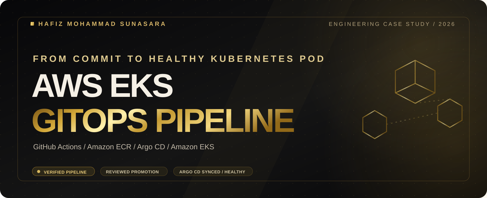
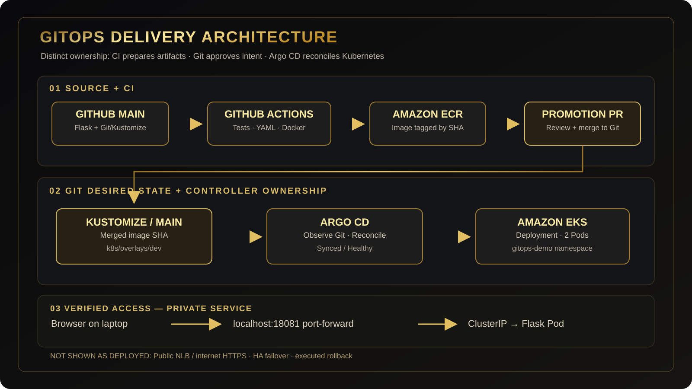
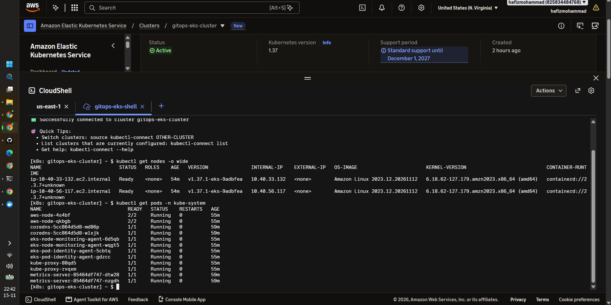
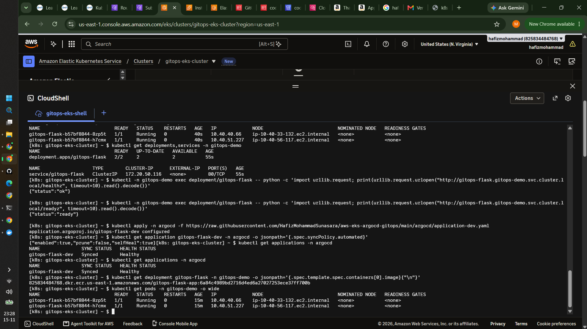
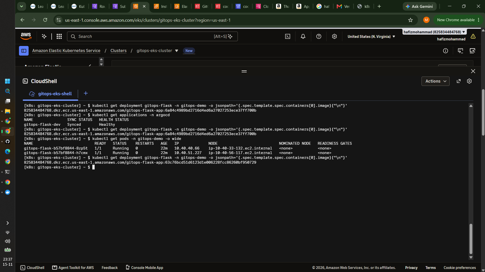
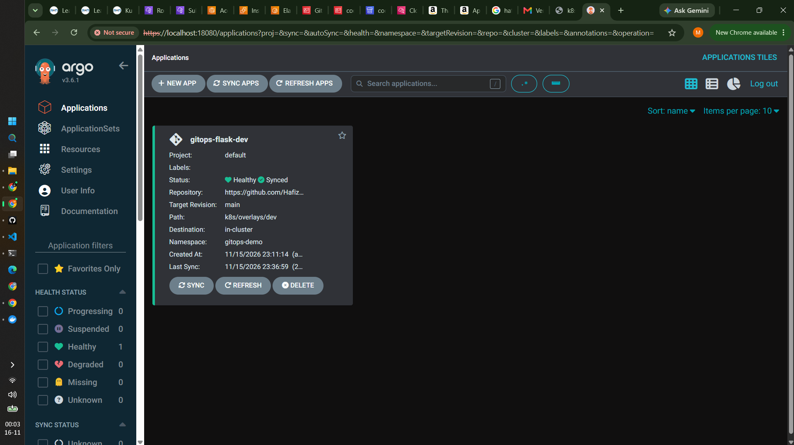
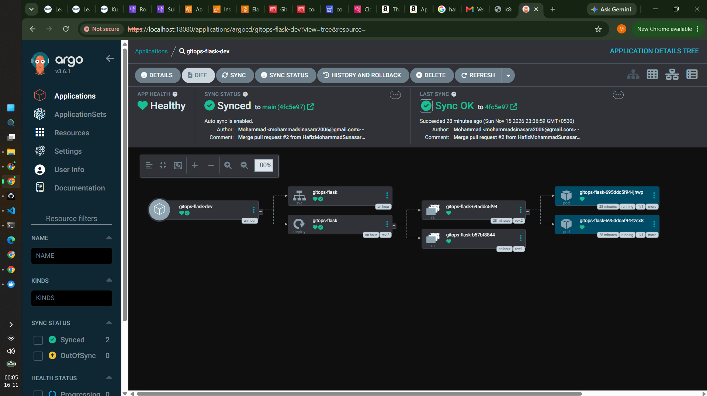
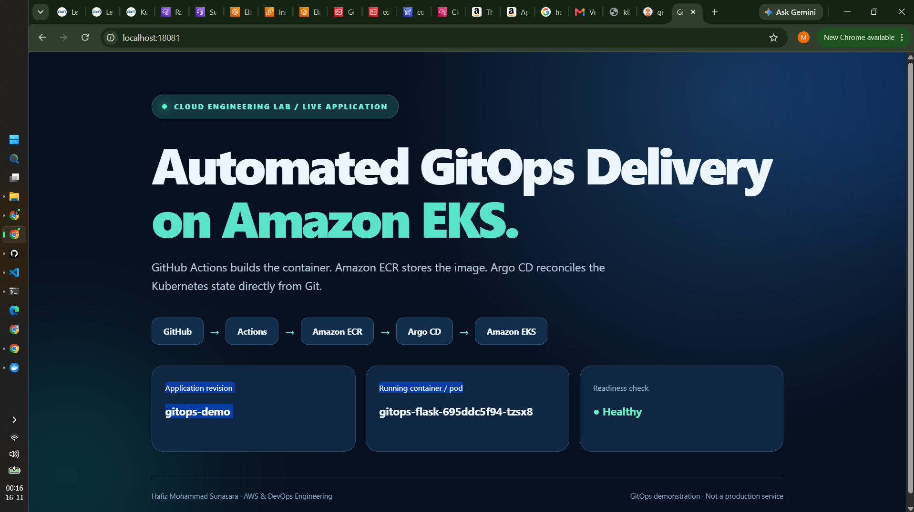
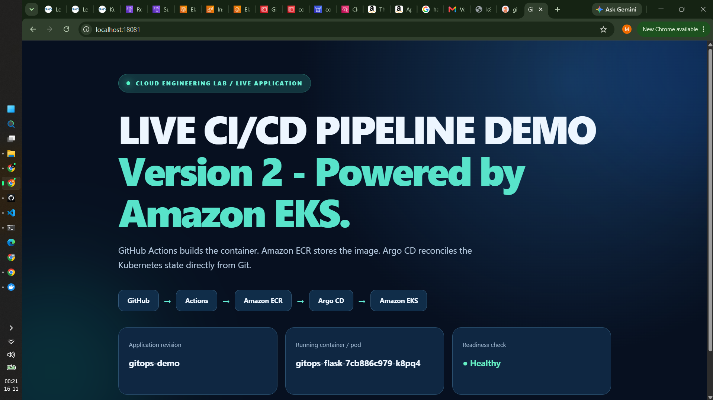
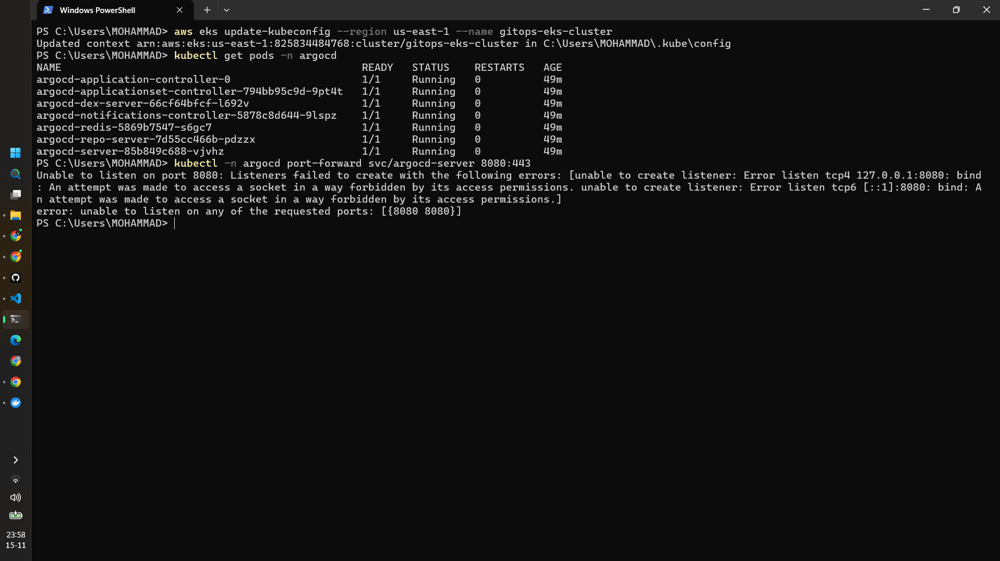

02 / 02
Ready worker nodes Captured cluster check
THE BUILD. THE FAILURES. THE PROOF.
A real GitOps delivery journey through GitHub Actions, Amazon ECR, Argo CD, and Amazon EKS.
Built, debugged and validated by Hafiz Mohammad Sunasara. Every major result is tied to screenshots, commits, workflow runs or GitHub pull requests—not invented production metrics.

Ready worker nodes Captured cluster check
Desired Flask replicas Ready in verification
Immutable-identity image Promoted by PR
Argo CD application Health: Healthy
01 / SYSTEM DESIGN
A tested container and a deployed application are not the same thing. The promotion pull request makes the release intention explicit; Argo CD takes over reconciliation.

Engineering honesty: The demonstrated Flask URL was localhost:18081 via a local port-forward. No public application URL, tested cross-AZ failure or completed Git rollback is claimed.
02 / THE FLOW
The successful final change moved from source to a new healthy workload without having the CI runner deploy directly with kubectl.
Flask heading updated and committed. The application source remains in its own working repository.
View source commit ↗GitHub Actions validates Python, manifests and Docker packaging. Eligible main pushes proceed to publishing.
View successful CI run ↗GitHub OIDC assumes AWS role credentials and pushes the image under the full source commit SHA.
BUILD ARTIFACT ≠ RELEASED VERSIONThe workflow proposes a Kustomize image update. A merged PR changes Git's declared desired version.
Inspect merged PR #3 ↗Argo watches the overlay, detects the new desired image, and the Deployment rolls out updated Pods.
OBSERVED: SYNCED / HEALTHYBrowser renders Version 2 on localhost after the rollout. Health and readiness probes returned HTTP 200.
See before/after proof ↓03 / EVIDENCE GALLERY
Original screenshots from the build and troubleshooting sessions. Select a category to inspect the strongest signals.

Cluster API, workers and system Pods responding.

Validation and build pipeline passing.

Git—not a direct kubectl command—records the release.

Desired Git state reconciled into Kubernetes.

Deployment, Service, ReplicaSets and live Pods.

Baseline observed through the local browser.

The UI change appears with a new healthy workload.

Local Windows port forwarding failed; 18080 worked.
Eight highlighted screenshots here · All 16 screenshots and evidence explanations ↗
04 / ENGINEERING DECISIONS
A credible case study explains the limits of the demonstration as clearly as the successful path.
The build can publish an image, but the deployment declaration changes only after a reviewable Git update.
AUDITABILITYShort-lived role assumption avoids baking long-lived AWS access keys into the workflow. Credentials still require careful handling.
IDENTITYTwo Pods, startup/readiness/liveness probes and bounded resources reduce several common deployment failure modes.
RELIABILITYThe demo did not establish public HTTP ingress, deterministic cross-AZ spreading or a completed rollback rehearsal.
ENGINEERING INTEGRITYBEYOND A SCREENSHOT
Study the complete architecture, commands, failure narratives and explicit limitations in the technical deep dive—or inspect the source repository and merged pull requests directly.